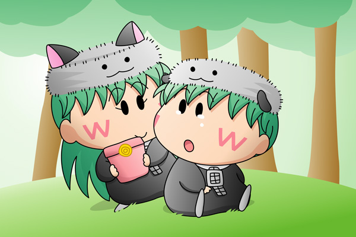

センリ「どうして昨日一人でいなくなっちゃったの？」
アンリ「ごめんね、センリ。
どうしても行かなくちゃいけない場所があったから・・・」
センリ「隠し事するなんてひどいよ！
ボクだってアンリのことをずっと心配していたんだからね！」
センリはそう言うとアンリに背中を向けて一人すねてしまいました。
アンリ「センリ・・・」
センリ「・・・」

アンリ「・・・はいっ」
センリ「！？」
アンリ「センリへのバレンタインチョコよ」
センリ「・・・もしかして昨日いなくなったのは
チョコを買うためだったの？」
アンリ「うん・・・でもセンリに淋しい思いをさせるくらいなら
チョコは買わない方が良かったかもしれないね・・・」
センリ「ううん、アンリからのチョコすごくうれしいよ！
ボクアンリのことだあい好き！」
バレンタインデーを記念して描いてみました。何のオチも無いベタなストーリーですが、バレンタインデーの日、グルミの森の一角でもこんな暖かな光景が見られそうです。
姉弟の絆がやたらと強いアンリとセンリですが、たまにこの二人の将来を考えてしまいます。篠塚ひろむ先生の『ちぇんじ！』では弟の千里が先に行動を起こしていましたが、妖精のアンリとセンリは大人になっても二人一緒のような気がします。もしも二人のどっちかに恋人が出来たら、姉弟の間に何か大きな波乱が起きそうですね。
(2007/2/15)